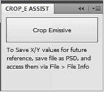
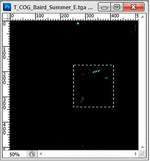
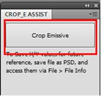
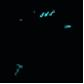
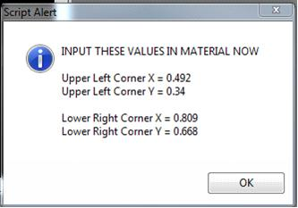
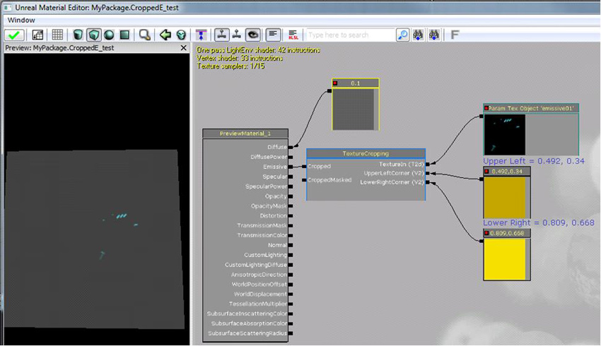

UDN
Search public documentation:
CroppedEmissiveAssistant
日本語訳
中国翻译
한국어
Interested in the Unreal Engine?
Visit the Unreal Technology site.
Looking for jobs and company info?
Check out the Epic games site.
Questions about support via UDN?
Contact the UDN Staff
中国翻译
한국어
Interested in the Unreal Engine?
Visit the Unreal Technology site.
Looking for jobs and company info?
Check out the Epic games site.
Questions about support via UDN?
Contact the UDN Staff
UE3 Home > Materials & Textures > Cropped Emissive Assistant
UE3 Home > Texture Artist > Cropped Emissive Assistant
UE3 Home > FX Artist > Cropped Emissive Assistant
UE3 Home > Texture Artist > Cropped Emissive Assistant
UE3 Home > FX Artist > Cropped Emissive Assistant
Cropped Emissive Assistant
Overview
Installation
- Download and install Adobe AIR , or Adobe Configurator . Adobe AIR is the plugin required. Configurator is a tool for Photoshop that allows you to create custom panels.
- Download the tool here: Crop_EAssist_Panel.zip
- Navigate to: [Photoshop Installation Path]\Plug-Ins\Panels and copy the
Crop_E Assistfolder into the \Plug-ins\Panels\ folder within the version of Photoshop you use. - If Photoshop is running, restart it. Once its restarted go to Window > Extensions > Crop_E Assist to open the panel.

Cropping Workflow
- Open your emissive texture, or make that layer group in the PSD visible. The script works with all file types, you can use the PSD file or saved _E tga. An alpha channel will be created in the process to save the selection.

- Box select the area of your emissive texture you wish to crop down to. The selection does not need to be square, or a power of 2; you can just select the area you need, at whatever dimensions you need. The texture will auto size to square & power of 2.
 - Push the Crop Emissive button.
 - Will be prompted first to manually resize the image if the auto sizing isn't what you wanted. If it is ok, can either cancel, or press OK.
- Next, a Save As dialog will appear. If you save the file as a PSD (which can be imported to the engine), it will store the coordinates for future reference. Otherwise, a TGA or PNG will be fine! Saved texture:
 - Finally, an alert will pop displaying the numbers required by the Material Function. Do not close this window until you input the values to the shader!
NOTE: If you saved the file as a PSD, these values are stored in as file's title, File > File Info or ctrl-alt-shift i, for future reference.

Setting Up the Material
- Import the cropped texture that was saved in Photoshop using the Cropped Emissive Assistant.
- Open the texture's properties (double-click it) and set the Address X/Y properties to to Clamp.
- Add to the material the Material Function:
Engine_MaterialFunctions01.Texturing.TextureCropping - Add a TextureObjectParameter expression, and 2 Constant2Vectors. Assign the imported texture to the TextureObjectParameter expression.
- Connect the output of the TextureObjectParameter to TextureIn input of the MaterialFunction, and connect the outputs of the Constant2Vectors up to the UpperLeft and LowerRight inputs.
- Input the values from the alert message in Photoshop.
 - Hook the desired output(s) of the MaterialFunction into the rest of the material.
Bugs/Known Issues/Limitations
- A new alpha channel will be created with every click of the button in the Crop_E Assist panel, and would need cleaned up manually currently.
- If the save fails due to the doc already being open/etc, it'll still close and need to be re-run
- Does not resize to 2:1 size textures, only 1:1